layout_agent · 2026-08-26 · 无新标注数据
评估系统阶段性成果
在生产 dump 管道与人工 T1/T2 标签到位之前，用现有 82 个去重视图、366 个扰动偏好对、v0 奖励模型和已上线的守护式规划，把能看见的进展摊开。数字只证明管线通，不是最终效果结论。
数据基础：扰动对 train 299 / val 67；v0 为 ResNet18、256²、冻结前两段、CPU 训练 14 epoch 早停。
公式评估器在构造标签上一致率 100%（训练对已按公式过滤）；学习模型的真实对比要等人工标签。
1. 扰动对比墙 — 数据管线已经能量产带标签样本
同一视图：左=现网/原布局，右=分级随机扰动。扰动算子包括文字点抖动、尺寸线滑移、同轴分层互换、径向引线端点抖动。生成时丢弃了公式判定「扰动反而更好」的 124 对歧义样本。
light · view_qQCaamhP_light0
扰动：swap_layers:Iw7CGeBN<->B7Zp9l0y · 公式 P 2315→3287 · 模型 100.0 vs 100.0 · 模型未拉开 / 方向相反
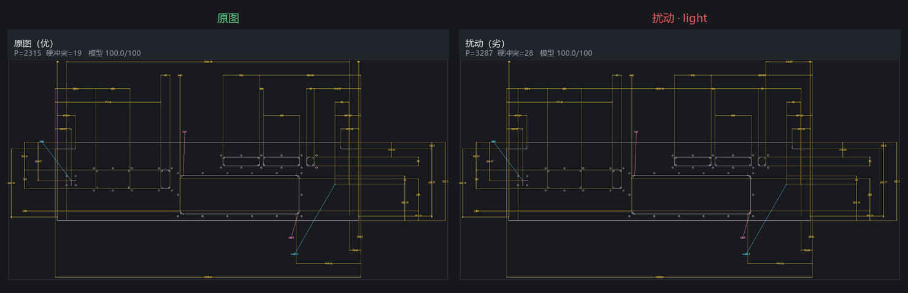
light · view_8bHeR0-W_light0
扰动：swap_layers:rnYloxF8<->ESrQGF43 · 公式 P 10333→11133 · 模型 100.0 vs 100.0 · 模型同意原图更好
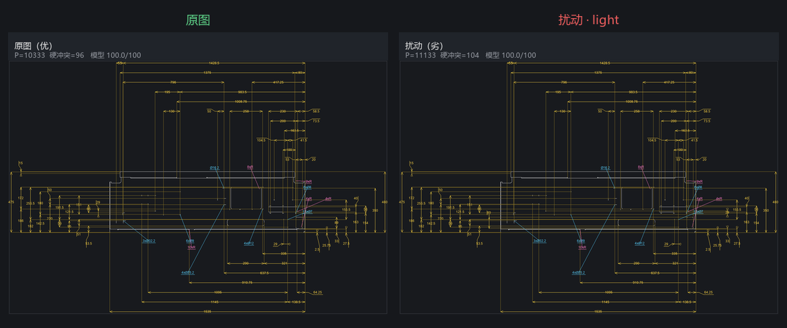
light · view_1DgsX4Uo_light0
扰动：swap_layers:6VUJWOi-<->q7QfDuyk · 公式 P 3721→4521 · 模型 100.0 vs 100.0 · 模型未拉开 / 方向相反
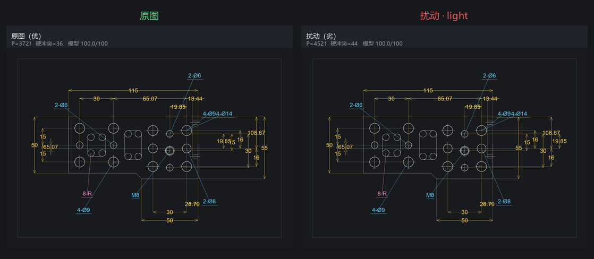
medium · view_a_ALPaJB_dbf0556e_medium0
扰动：jitter_linear_text:gtEjSv*H:-0.4,17.5, swap_layers:NnfT5WMD<->8qs8jwTh · 公式 P 168055→169707 · 模型 100.0 vs 100.0 · 模型未拉开 / 方向相反
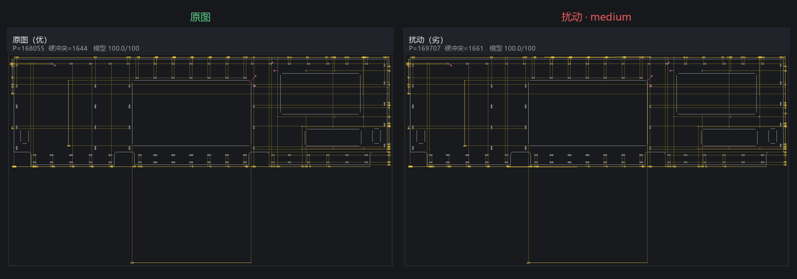
medium · view_G93QpUQX_medium0
扰动：jitter_radial_text:3UIX7GkU:-9.4,12.6, swap_layers:9cUnlFlQ<->kRLuEMor · 公式 P 3226→4619 · 模型 100.0 vs 100.0 · 模型同意原图更好
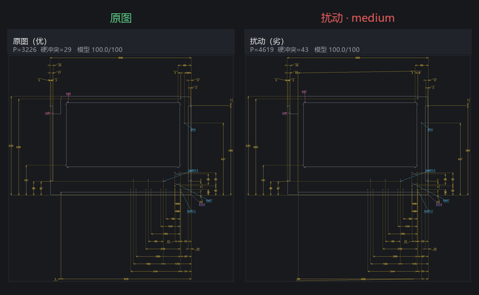
medium · view_yydmhYyi_medium1
扰动：shift_dimline:GyivfTL*:17.5, swap_layers:21xvveIb<->LuRTeEH0 · 公式 P 962→1962 · 模型 100.0 vs 100.0 · 模型未拉开 / 方向相反
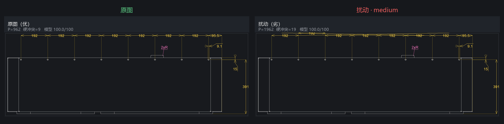
heavy · view_qMz22veQ_heavy0
扰动：shift_dimline:qkXbEFpA:-42.3, swap_layers:Q8gkHfhm<->sPrOEPGt, jitter_linear_text:Ww*3kmLo:13.1,-29.6 · 公式 P 7005→8313 · 模型 100.0 vs 100.0 · 模型未拉开 / 方向相反
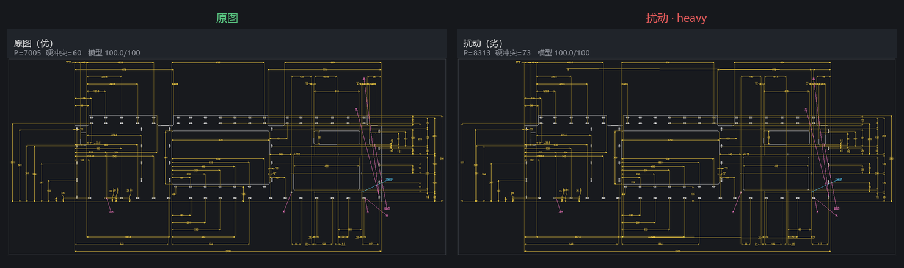
heavy · view_E5749cOT_heavy0
扰动：jitter_radial_text:rxzIPc-k:43.9,8.7, jitter_radial_text:7e2-gLyo:5.4,-37.1, swap_layers:9DmHQamX<->CyvtXalt · 公式 P 1406→2514 · 模型 100.0 vs 0.1 · 模型同意原图更好
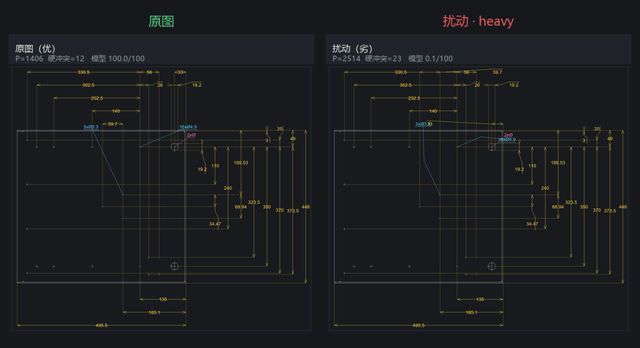
heavy · view_UPvsN1t-_heavy1
扰动：shift_dimline:Z1sI_a3r:28.9, jitter_linear_text:9Q_fEPtl:-20.3,16.0, shift_dimline:SoQJ66lw:-59.0 · 公式 P 3366→4366 · 模型 100.0 vs 100.0 · 模型未拉开 / 方向相反
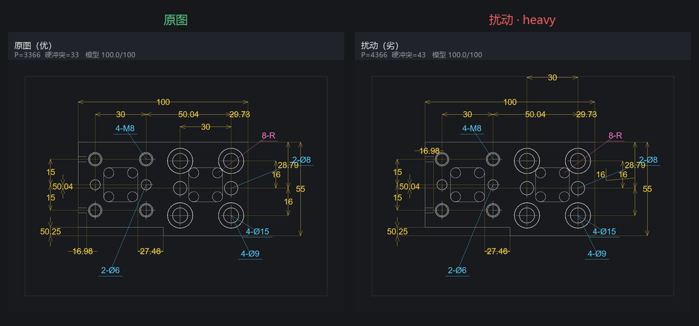
2. 模型打分演示 — learned_quality 已经能输出 0–100 分
v0 奖励模型对「原图 vs 重度扰动」打分。分数来自 sigmoid(logit)×100。挑的是模型分差较大的紧凑视图，用来展示接口形态，不是泛化证明。
view_8hojljns_heavy0 · Δ=100.0
扰动：shift_dimline:dnpxm0bB:20.1, shift_dimline:WgTvTcCF:50.5, shift_dimline:WgTvTcCF:-36.0
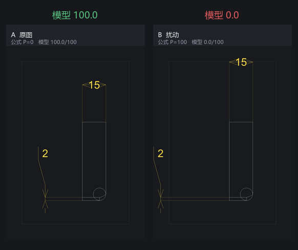
view_E5749cOT_heavy0 · Δ=99.9
扰动：jitter_radial_text:rxzIPc-k:43.9,8.7, jitter_radial_text:7e2-gLyo:5.4,-37.1, swap_layers:9DmHQamX<->CyvtXalt
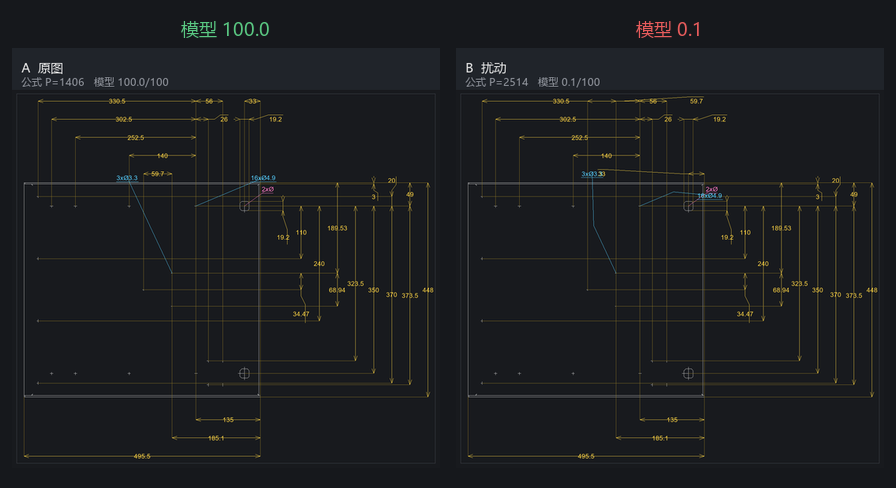
view_9IIfRtWB_heavy0 · Δ=98.7
扰动：shift_dimline:gZtS-lXk:51.4, swap_layers:Cp9JPDyh<->GIEo99X2, swap_layers:nezpTXAW<->gZtS-lXk
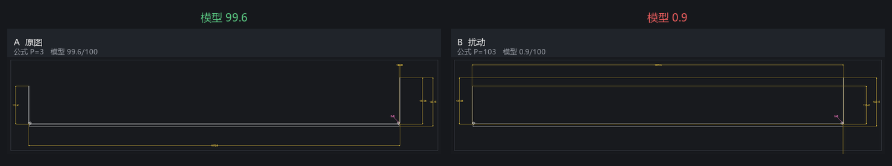
case_conflict_heavy1 · Δ=97.4
扰动：jitter_radial_text:R_fillet:-38.4,43.7, shift_dimline:L_overall:-29.1, shift_dimline:L_seg:-45.0
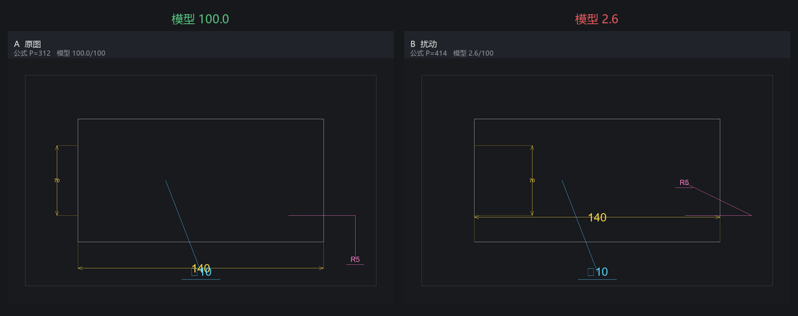
3. Agent 优化前后 — 守护式全局规划已上线
一次性建议改为「全局动作批 + 逐动作复评只保留变好的 + 最多 3 轮细化」。布局后综合分不会低于布局前。下面三例在本机用当前内核当场跑出。
5 条尺寸堆叠（合成）
综合分 4.8 → 33.3 硬冲突 20 → 2 raw_P 2020 → 206
保留动作：balance_linear_sides、linear_side_dim3_U
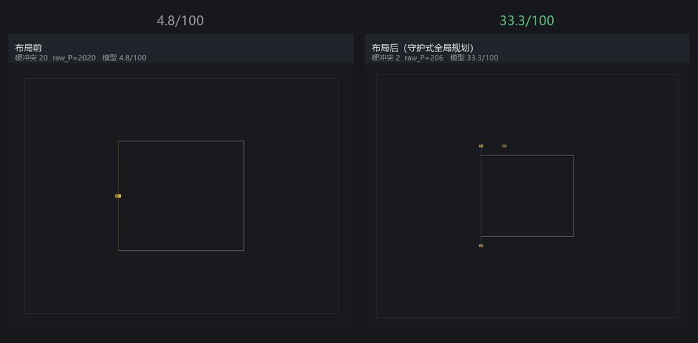
demo · 冲突
综合分 25.0 → 50.0 硬冲突 3 → 1 raw_P 312 → 108
保留动作：radial_sector_D_hole_1
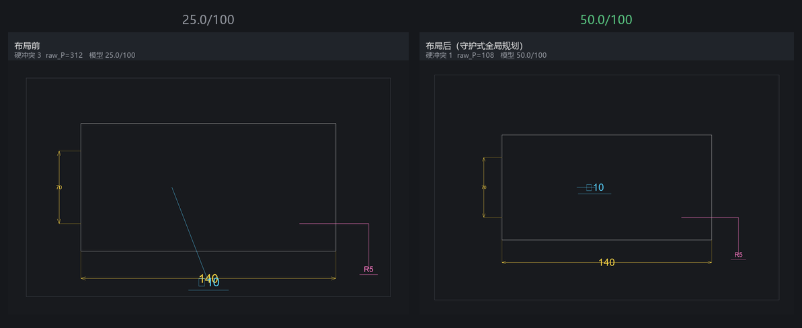
demo · 过密
综合分 16.7 → 50.0 硬冲突 5 → 1 raw_P 526 → 118
保留动作：balance_linear_sides、linear_side_L_mid_D
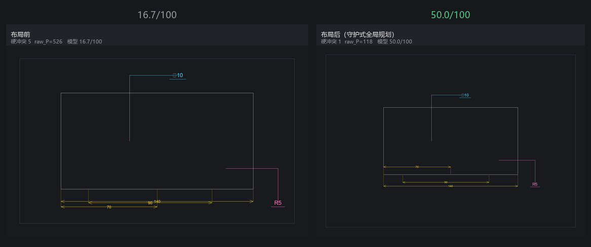
5. 训练曲线 — 重度扰动已学会，轻度是瓶颈
best checkpoint：epoch 4，val 一致率 all=0.61，
light=0.44，medium=0.65，heavy=0.80。
loss 继续下降而 val 不再升，是 299 对喂 ResNet18 的过拟合，等 R1/R2 千对级数据后再放开分辨率和冻结。
| 集合 | 一致率 | 说明 |
|---|
| val（训练时，epoch 4） | 0.61 | early-stop 依据 |
| 全部 366 对构造标签（含训练集） | 0.89 |
agree 126 / disagree 16 / model_tie 224；含训练集，不能当效果 |
Source: runs/reward_v0/history.json · eval_construct.json · 2026-08-24 训练